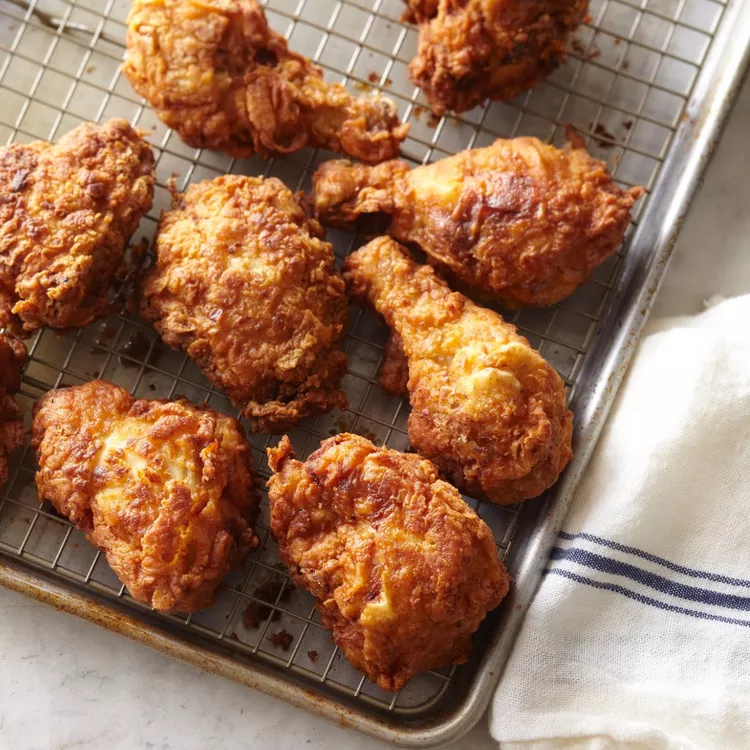

Fried Chicken

Delicious Fried Chicken
This crispy fried chicken can be made from scratch in just over an hour!
This is the only
fried chicken recipe you will ever need. It combines all the
tried-and-true tricks to ensure
the juiciest, most flavorful, crispiest chicken every time!
Ingredients:
- 1 (4 pound) chicken, cut into pieces
- 1 cup buttermilk
- 2 cups all-purpose flour for coating
- 1 teaspoon paprika
- salt and pepper to taste
- 2 quarts vegetable oil for frying
Directions:
- Take your cut up chicken pieces and skin them if you prefer.
-
Put the flour in a large plastic bag (let the amount of chicken you are
cooking dictate the amount of flour you use).
Season the flour with paprika, salt and pepper to taste (paprika helps
to brown the chicken).
-
Dip chicken pieces in buttermilk then, a few at a time, put them in the
bag with the flour, seal the bag and shake to coat well.
-
Place the coated chicken on a cookie sheet or tray, and cover with a
clean dish towel or waxed paper.
LET SIT UNTIL THE FLOUR IS OF A PASTE-LIKE CONSISTENCY. THIS IS CRUCIAL!
-
Fill a large skillet (cast iron is best) about 1/3 to 1/2 full with
vegetable oil. Heat until VERY hot.
-
Put in as many chicken pieces as the skillet can hold. Brown the chicken
in HOT oil on both sides.
-
When browned, reduce heat and cover skillet; let cook for 30 minutes
(the chicken will be
cooked through but not crispy). Remove cover, raise heat again, and
continue to fry until crispy.
-
Drain the fried chicken on paper towels. Depending on how much chicken
you have, you may
have to fry in a few shifts. Keep the finished chicken in a slightly
warm oven while preparing the rest.